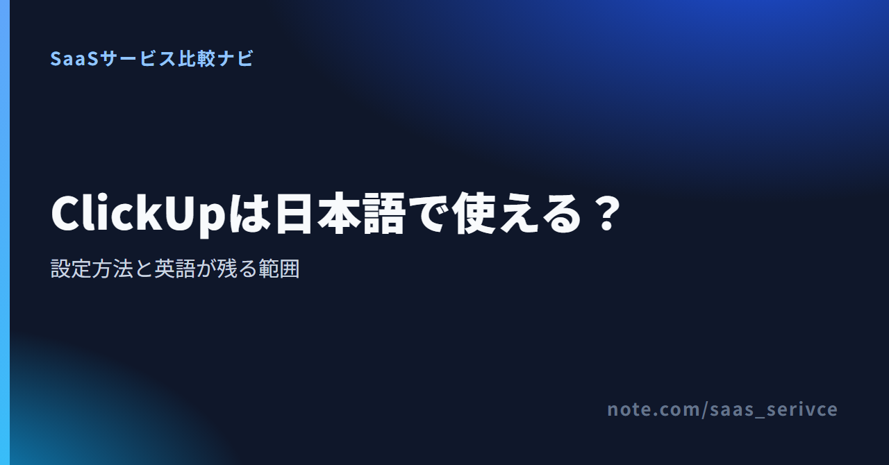
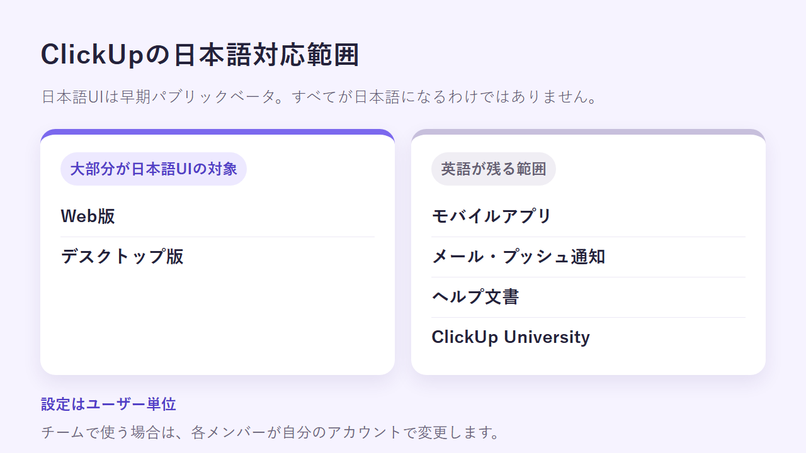
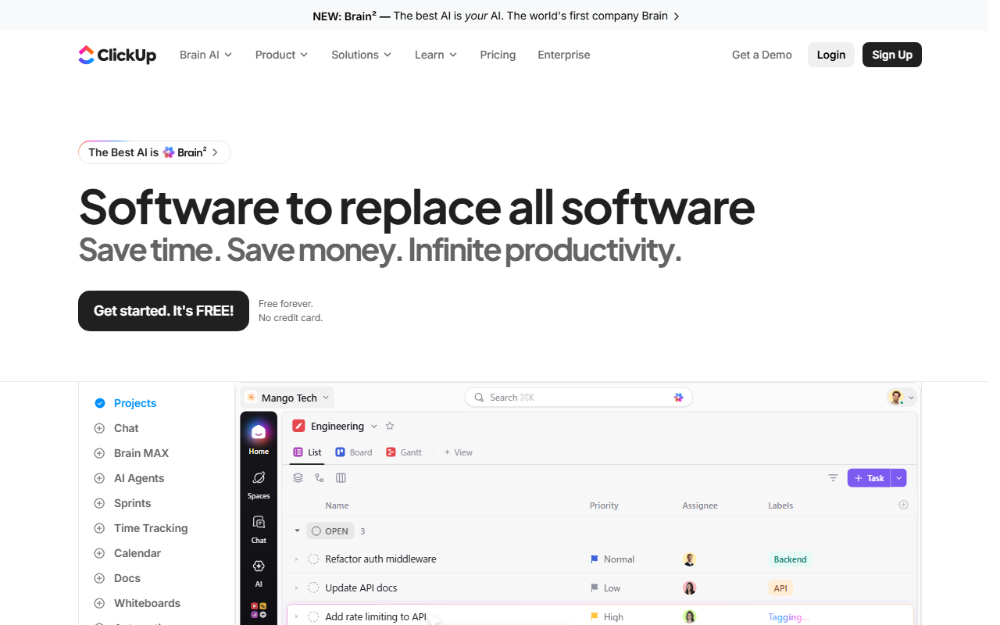
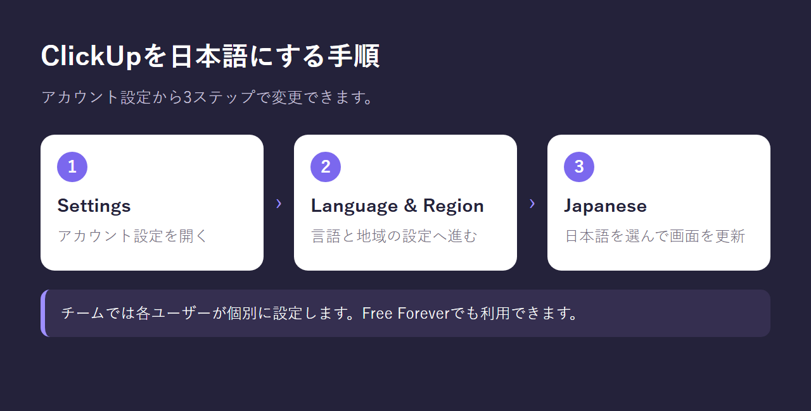
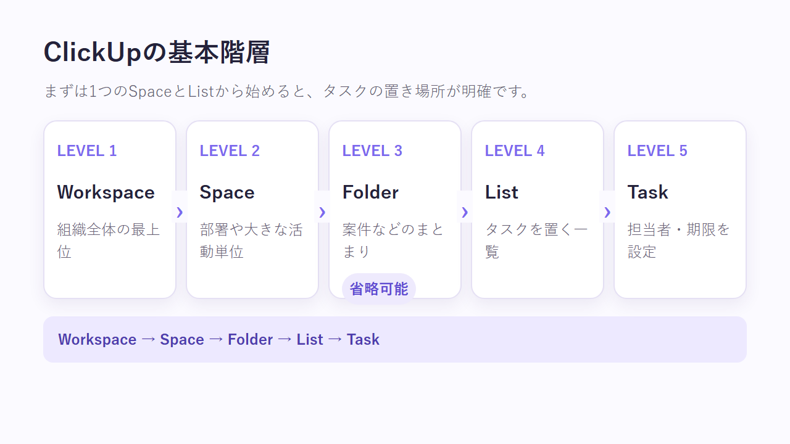
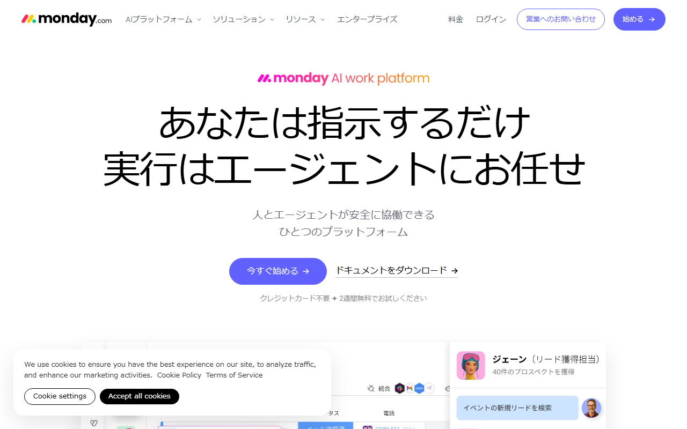
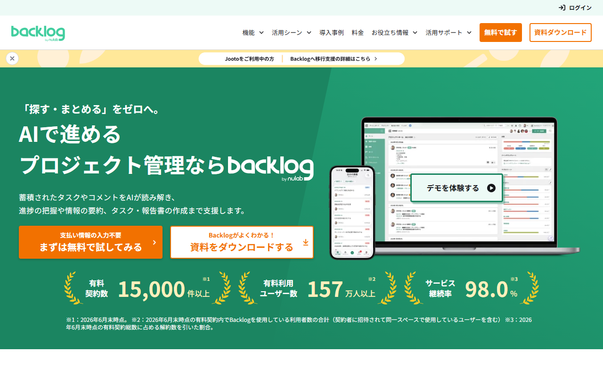

ClickUpは日本語で使える？ベータUIの設定方法・使い方・サポートの対応範囲
ClickUpは、チームのタスクや資料を一つの画面で管理するプロジェクト管理ツールです。仕事の進み具合も同じ画面で追えます。Web版とデスクトップ版では、日本語UIのベータ版を利用できます。
ただし、モバイルや通知には英語が残ります。この記事では、日本語への切り替え方と基本操作を紹介します。サポートに加え、支払いと請求書の対応範囲もまとめました。
ClickUpの日本語対応状況（UI・通知・サポート・請求書）
- Web版：日本語UIベータの対象
- デスクトップ版：日本語UIベータの対象
- モバイルアプリ：ベータの対象外
- 通知・ヘルプ：ベータの対象外
- 日本語の有人対応：公開情報では未確認
- 請求書：管理画面から取得可能
パソコン中心のチームなら、日本語表示で使えます。外出先での操作が多いなら、どこに英語が残るかも見ておきましょう。
無料登録の入口に加え、現在の製品情報と料金を見られます。
ClickUpを日本語にする設定方法
言語設定では、Settings → Language & Region → Japaneseの順に選びます。変更はユーザーごとに行う仕組みです。ワークスペース全体には一括で適用されません。


公式サイトは英語表示です。無料登録の案内や製品画面の例が掲載されています。
SettingsからLanguage & Regionを開く
ClickUpへログインしたら、自分のアカウント設定から言語の項目を開きます。
- ClickUpへログインする
- Settingsを開く
- Language & Regionを選ぶ
言語や地域、日時形式の設定は、全プラン・全ユーザーロールで利用でき、管理者に限られません。Free Foreverでも同じ経路から設定を進められます。
Japaneseを選び、画面を更新する
Language & RegionでJapaneseを選ぶと、対応している画面が日本語表示へ変わります。すぐに反映されないときは、ブラウザのタブを更新してください。
Japaneseで切り替えるのは、ClickUpが用意した表示言語です。ブラウザの自動翻訳ではありません。英語が残ったら、設定ミスと決めつけず、ベータの対象外か翻訳前の画面かを見分けます。

チームでは各ユーザーが個別に設定する
言語はユーザー単位で保存されます。管理者が自分の画面を日本語にしても、ほかのメンバーの表示言語までは変わりません。
チームで使うときは、各自がLanguage & Regionを開いてJapaneseを選びます。英語が残る場所も共有しておくと、「自分だけ設定できていない」という戸惑いを減らせます。
無料プランのFree Foreverにも言語設定があります。契約前に試せば、実際の画面にどの程度英語が残るかが分かります。
日本語化した後の基本的な使い方
日本語へ切り替えたら、まずClickUp固有の階層を見ておきます。次に、ひとつのListへTaskを作りましょう。担当者と期限を設定し、同じTaskを各ビューで表示すると、基本構造がつかめます。
Workspace・Space・Folder・List・Taskの順序を確認する
基本階層は、Workspaceから始まります。その中にSpaceを作り、さらにFolderとListを置く仕組みです。TaskはListの中で管理します。Folderは任意です。部署や案件が増えたときに、Taskをまとめるために使えます。
導入直後は階層を細かく作り込まず、ひとつのSpaceとListから始めます。これなら、Taskの登録先で迷いません。使い方が定まってから部署や案件ごとに分ければ、最初の設計に時間を取られずに済みます。

最初のタスクに担当者と期限を設定する
ClickUpではTaskをListの中に置き、Taskごとに担当者と期限を設定します。まずは社内で完結する仕事を1件だけ登録しましょう。タスク名やコメントの日本語表示に加え、英語の通知がどう届くかも見ておきます。
List・Board・Calendarから必要なビューを選ぶ
同じTaskでも、Listでは一覧、Boardではステータス別に表示されます。Calendarでは期限を軸に並ぶため、Taskを作り直す必要はありません。タスクを一覧で見るならList、進捗会議ではBoard、締切を見るときはCalendarと使い分けられます。
日本語入力・AI出力・英語が残る機能を分けて確認する
画面の表示言語と、タスクやコメントへの日本語入力は別です。ClickUp Brainの回答言語も分けて考えます。アカウントで選んだ言語はBrainの既定の応答言語にも使われます。ただし、日本語出力の自然さや正確さは保証されません。
タスク名・コメント・Docsの日本語入力を確認する
普段使う固有名詞や文章を入力し、表示と検索のしやすさを試します。Free ForeverのTaskやコメント、Docsに実務に近い文を入れ、検索結果まで見ておきましょう。
ClickUp Brainを利用する場合は日本語出力を個別に確認する
公式ヘルプによると、アカウントで選んだ言語がBrainの既定の応答言語になります。ただし、日本語出力の自然さや正確さは、公式情報だけでは分かりません。要約や文章の書き換えなど、実際の作業で試して評価します。
モバイル・通知・ヘルプは英語が残る前提で判断する
モバイルアプリと通知は、日本語UIベータの対象外です。ヘルプ文書とClickUp Universityにも英語が残ります。パソコンの画面が日本語でも、スマートフォンやトラブル対応では英語を目にします。
外出先で作業するチームは、モバイルに残る英語も見ておきましょう。英語のヘルプを読める担当者がいない場合も同じです。無料枠で普段の作業を試し、どの場面に英語が現れるかを把握してから導入を決めます。
日本語サポート・日本からの支払い・請求書
どのプランでも、24時間利用できる問い合わせ経路があります。有人ライブチャットは有料プラン向けです。日本語での有人対応については、公開情報に記載がありません。カードの対応ブランドと請求書の取得方法は案内されています。日本発行カードを使えるかは、別途確かめましょう。
サポート窓口はあるが日本語の有人対応は未確認
全プランで、チャットボットから24時間メールチケットを作成できます。有料プランでは、有人サポート担当者とのライブチャットも使えます。どちらも、日本語対応の可否は公開情報に明記されていません。日本語での対応が欠かせない場合は、契約前に問い合わせましょう。
受付カードと日本発行カードの確認範囲
ClickUpが案内しているカードブランドは次のとおりです。
- Visa
- Mastercard
- American Express
- Discover
上記ブランドのデビットカードとクレジットカードを利用できます。プリペイドデビットカードとPayPalには対応していません。
ただし、日本で発行されたカードを利用できるかは明記されていません。申し込み前に、利用予定のカードと請求先情報を用意しましょう。そのうえで、決済画面に表示される条件を確かめてください。
Invoice Historyから請求書を取得する
請求書は、Workspace設定のBillingからInvoice Historyへ進むと表示・ダウンロードできます。請求先住所とVAT番号も設定できます。
請求書をダウンロードできることと、日本の適格請求書として扱えることは別です。VAT番号の記載や消費税の処理を含む税務上の判断は、税理士に確認してください。
公式サイトには、各プランの対象機能と契約の入口が載っています。
日本語対応を優先する場合の代替候補
日本語UIがベータであることに不安があれば、代替ツールも比べましょう。有人サポートの日本語対応が導入条件に合わない場合も同じです。候補はmonday.com、Wrike、Backlog。料金の優劣は扱いません。日本語の案内と問い合わせ窓口に絞って比べます。
monday.com：日本語UIと日本語ヘルプを重視するチーム向け

トップページは日本語で、開始ボタンと2週間無料の案内があります。
monday.comでは、アカウントの表示言語に日本語を選べます。公式の日本語ヘルプセンターもあります。画面操作を日本語の案内で調べたいチーム向けです。
常設のFreeプランもありますが、利用人数や機能には制限があります。ClickUpから移るなら、日本語対応だけで決めないこと。チームの人数と必要なボード機能がプランに収まるかも確かめてください。
Wrike：日本語サイト・UI・ヘルプをそろえたいチーム向け

公式サイトの日本語版には、無料で試すボタンと製品紹介へのリンクがあります。
Wrikeの多言語UIは、日本語に対応しています。公式サイトとヘルプも日本語で用意されています。製品選びから操作方法まで、日本語の公式情報をたどれます。
料金はUSDで表示され、購入時には銀行が現地通貨へ換算すると案内されています。画面とヘルプを日本語で使いたく、外貨建ての契約も受け入れられるチーム向けです。
Backlog：日本語窓口と円建て契約を優先するチーム向け

トップページは日本語で、無料利用や資料のダウンロードへ進めます。
Backlogは日本語UIに対応し、公式サイトとサポートも日本語です。契約は円建て。銀行振込とクレジットカードに対応しています。英語での問い合わせや外貨換算を避けたい組織向けです。
ClickUpと同じ機能構成ではありません。乗り換える前に、必要なプロジェクト数とストレージを照らし合わせましょう。使いたいビューがそろっているかも調べます。日本語対応と、仕事に必要な機能の両方で判断してください。
Free Foreverで日本語設定を試してから有料化を判断する
ClickUpにはFree Foreverがあり、有料契約の前に日本語設定と基本操作を試せます。普段使う端末でいつもの操作を試せば、英語が残る場面が分かります。料金を細かく比べるのは、その後でも遅くありません。
Free Foreverで日本語UIと基本操作を確認する
Free Foreverで利用できる主な機能は、次のとおりです。
- タスクは無制限
- メンバーは無制限
- ストレージは60MB
- Spacesは5件
- 言語設定は全プラン・全ユーザーロールで利用可能
まず、普段使う端末を日本語へ切り替えます。次に、ひとつのListへ実務に近いタスクを作りましょう。パソコンに加え、モバイルアプリや通知も試します。ヘルプも読んでおけば、チームが許容できる英語の範囲が見えてきます。
有料化の前に容量・Spaces・必要機能を確認する
表示言語と基本操作を確かめる段階なら、Free Foreverで足ります。ただし、ストレージとSpacesには上限があります。ファイルを多く添付すると、上限に近づきやすくなります。部署や案件ごとにSpaceを分ける場合も同じです。
Free Foreverと有料プランの違いを見ながら、日本語UIで普段の仕事を進められるか試せます。
ClickUpの日本語対応でよくある質問
- 日本語対応を必須条件にする場合、どこまで確認すればよいですか？ Web版とデスクトップ版だけでは足りません。普段使うモバイルアプリや通知も試しましょう。トラブル時に読むヘルプも対象です。日本語の有人対応が必要なら、契約前に問い合わせてください。
- 複数人で試すとき、管理者の確認だけで足りますか？ 足りません。言語設定はユーザー単位です。Free Foreverへ参加する各メンバーが日本語へ切り替えます。そのうえで、担当する仕事に英語が残るかを確かめましょう。
まとめ：日本語UIの対象外まで確認して導入を決める
ClickUpはWeb版とデスクトップ版の大部分を日本語にできますが、完全な日本語化ではありません。 設定はユーザーごとに行います。モバイルアプリと通知はベータの対象外です。ヘルプ文書とClickUp Universityにも英語が残ります。
導入前には、次の順で判断すると迷いません。
- Free Foreverで各ユーザーが日本語へ切り替える
- 本番に近いタスクとコメントを日本語で登録する
- モバイル、通知、ヘルプに残る英語を確認する
- 日本語の有人対応が必要なら契約前に問い合わせる
- 要件に合わなければmonday.com、Wrike、Backlogも検討する
無料枠で日本語表示を試し、英語が残る範囲を把握しましょう。英語の残り方を見て、有料化するか、別のツールへ切り替えるかを判断できます。